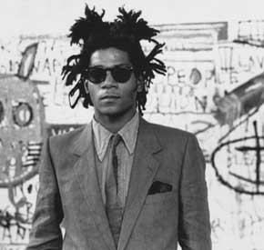

Jean-Michel Basquiat
(ur. 22 grudnia 1960 w Brooklynie, w Nowym Jorku, zm. 12 sierpnia 1988) – amerykański artysta współczesny. Początkowo uprawiał graffiti (był prekursorem tej dziedziny), później zajął się malarstwem, był przedstawicielem nowego ekspresjonizmu. Jego obrazy cechowały się połączeniem prymitywnej sztuki afrykańskiej, współczesnej „sztuki ulicy”, napisów, elementów komiksu oraz archetypów kultury.
Życie i twórczość
Jego matka Matilde była Portorykanką, a ojciec Gerard – Haitańczykiem. Basquiat już w dzieciństwie przejawiał zainteresowanie sztuką i malarstwem. W wieku siedmiu lat trafił do szpitala z powodu wypadku samochodowego, wówczas matka podarowała mu podręcznik do anatomii Henry’ego Graya (tzw. Gray’s Anatomy). Basquiatowi spodobały się ilustracje w tej książce i czerpał z nich później inspirację do swoich prac. Założył także zespół muzyczny o nazwie „Gray”.
W wieku 17 lat, razem ze przyjacielem Alem Diazem, rozpoczął malowanie graffiti na murach Manhattanu, dodając nieznany wówczas podpis „SAMO” (Same Old Shit). Grafikami były treściwe teksty, takie jak: „Burżuj czuje się bezpieczny; SAMO” („Plush safe he think; SAMO”). W grudniu 1978 The Village Voice opublikowało artykuł o ich twórczości. Projekt SAMO zakończył się stwierdzeniem „SAMO IS DEAD” napisanym na murach budynków SoHo.
W 1978 Basquiat opuścił dom oraz porzucił Edward R. Murrow High School na rok przed jej ukończeniem. Przeniósł się do miasta i żył z przyjaciółmi, utrzymując się z ulicznej sprzedaży koszulek i pocztówek. Zaczął także malować obrazy.
W 1981 poeta, krytyk sztuki i kulturalny prowokator Rene Ricard opublikował artykuł The Radiant Child w czasopiśmie „Artforum”. Była to trampolina Basquiata do szybkiej kariery na międzynarodowej arenie.
W 1982 pokazywał już swoje prace regularnie w galeriach Nowego Jorku. Zaczął spotykać się z ambitną i początkującą wówczas piosenkarką Madonną. W 1983 poznał sławnego przedstawiciela sztuki pop-art Andy’ego Warhola. Zaczął z nim współpracować, co zaowocowało bliską przyjaźnią obu artystów. Wspólnie stworzyli ponad 100 obrazów.
Już w 1984 wielu jego znajomych niepokoiło się o niego z powodu jego uzależnienia od narkotyków (w szczególności od heroiny). W 1985 Basquiat pojawił się na okładce „The New York Times”. Jego popularność rosła, a prace zaczęto pokazywać na osobnych wystawach (także w Europie).
Zmarł w 1988 z powodu przedawkowania heroiny, parę dni po swojej drugiej wycieczce do Wybrzeża Kości Słoniowej.
Postać Basquiata (zagrana przez Jeffreya Wrighta) została przedstawiona w filmie Basquiat – Taniec ze śmiercią. Jean-Michel Basquiat, jako aktor, wystąpił w filmie Downtown 81, a także w teledysku zespołu Blondie do piosenki „Rapture”. Był również częstym gościem programu „Glenn O’Brien's TV Party”.